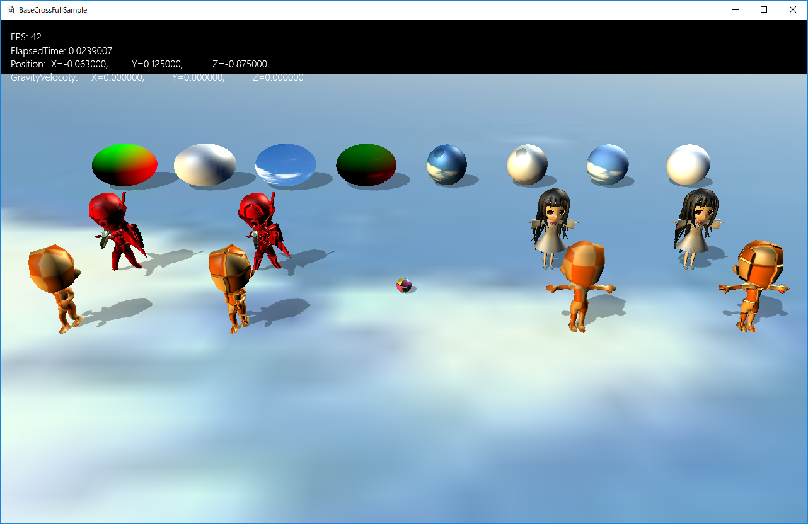
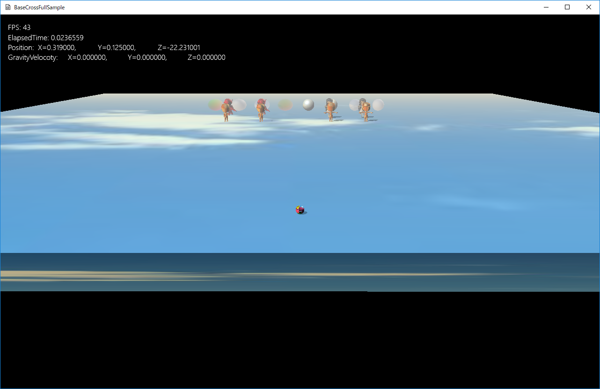
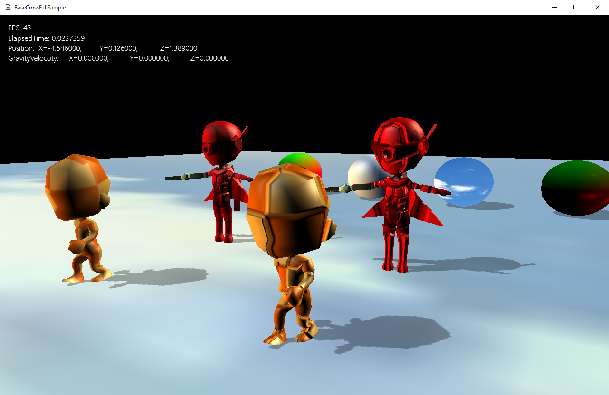

図1303a
前項のサンプルとほぼ同じですが、シェーダが違います。リアルなライティングやフォグが施されています。
//初期化
void PtSphere::OnCreate() {
//中略
//描画コンポーネント
auto ptrDraw = AddComponent<BcPTStaticDraw>();
ptrDraw->SetFogEnabled(true);
//中略
}

図1303b

図1303c
//初期化
void StaticChara::OnCreate() {
//中略
if (m_TamgentUse) {
auto ptrDraw = AddComponent<BcPNTnTStaticModelDraw>();
ptrDraw->SetFogEnabled(true);
ptrDraw->SetMeshResource(L"MODEL_MESH_WITH_TAN");
ptrDraw->SetNormalMapTextureResource(L"MODEL_NORMAL_TX");
ptrDraw->SetMeshToTransformMatrix(spanMat);
}
else {
auto ptrDraw = AddComponent<BcPNTStaticModelDraw>();
ptrDraw->SetFogEnabled(true);
ptrDraw->SetMeshResource(L"MODEL_MESH");
ptrDraw->SetMeshToTransformMatrix(spanMat);
}
}
//初期化
void BoneChara::OnCreate() {
//中略
if (m_TamgentUse) {
//描画コンポーネントの設定
auto ptrDraw = AddComponent<BcPNTnTBoneModelDraw>();
ptrDraw->SetFogEnabled(true);
//描画するメッシュを設定
ptrDraw->SetMeshResource(L"Chara_R_MESH_WITH_TAN");
ptrDraw->SetNormalMapTextureResource(L"Chara_R_NORMAL_TX");
ptrDraw->SetMeshToTransformMatrix(spanMat);
ptrDraw->AddAnimation(L"Default", 0, 100, true, 20.0f);
ptrDraw->ChangeCurrentAnimation(L"Default");
}
else {
//描画コンポーネントの設定
auto ptrDraw = AddComponent<BcPNTBoneModelDraw>();
ptrDraw->SetFogEnabled(true);
//描画するメッシュを設定
ptrDraw->SetMeshResource(L"Chara_R_MESH");
ptrDraw->SetMeshToTransformMatrix(spanMat);
ptrDraw->AddAnimation(L"Default", 0, 100, true, 20.0f);
ptrDraw->ChangeCurrentAnimation(L"Default");
}
//透明処理
SetAlphaActive(true);
}
void Scene::CreateResourses() {
//中略
//ボーンモデルの通常リソース
auto modelMesh = MeshResource::CreateBoneModelMesh(dataDir, L"Chara_R.bmf");
App::GetApp()->RegisterResource(L"Chara_R_MESH", modelMesh);
//ボーンモデルのタンジェント付きリソース
modelMesh = MeshResource::CreateBoneModelMeshWithTangent(dataDir, L"Chara_R.bmf");
App::GetApp()->RegisterResource(L"Chara_R_MESH_WITH_TAN", modelMesh);
//法線マップ
strTexture = dataDir + L"Chara_R_narmal.png";
App::GetApp()->RegisterTexture(L"Chara_R_NORMAL_TX", strTexture);
//ボーンモデル(マルチメッシュ)の通常リソース
auto multiModelMesh = MultiMeshResource::CreateBoneModelMultiMesh(dataDir, L"Object_WalkAnimation.bmf");
App::GetApp()->RegisterResource(L"Object_WalkAnimation_MESH", multiModelMesh);
//ボーンモデル(マルチメッシュ)のタンジェント付きリソース
multiModelMesh = MultiMeshResource::CreateBoneModelMultiMeshWithTangent(dataDir, L"Object_WalkAnimation.bmf");
App::GetApp()->RegisterResource(L"Object_WalkAnimation_MESH_WITH_TAN", multiModelMesh);
//法線マップ
strTexture = dataDir + L"Tx_Checker_Normal.png";
App::GetApp()->RegisterTexture(L"OBJECT_NORMAL_TX", strTexture);
//スタティックモデルの通常リソース
auto staticModelMesh = MeshResource::CreateStaticModelMesh(dataDir, L"Character_01.bmf");
App::GetApp()->RegisterResource(L"MODEL_MESH", staticModelMesh);
//スタティックモデルのタンジェント付きリソース
staticModelMesh = MeshResource::CreateStaticModelMeshWithTangent(dataDir, L"Character_01.bmf");
App::GetApp()->RegisterResource(L"MODEL_MESH_WITH_TAN", staticModelMesh);
//法線マップ
strTexture = dataDir + L"Character_2_normal.png";
App::GetApp()->RegisterTexture(L"MODEL_NORMAL_TX", strTexture);
//スタティックモデル(マルチメッシュ)の通常リソース
auto staticMultiModelMesh = MultiMeshResource::CreateStaticModelMultiMesh(dataDir, L"ObjectOnly.bmf");
App::GetApp()->RegisterResource(L"ObjectOnly_MESH", staticMultiModelMesh);
//スタティックモデル(マルチメッシュ)のタンジェント付きリソース
staticMultiModelMesh = MultiMeshResource::CreateStaticModelMultiMeshWithTangent(dataDir, L"ObjectOnly.bmf");
App::GetApp()->RegisterResource(L"ObjectOnly_MESH_WITH_TAN", staticMultiModelMesh);
}